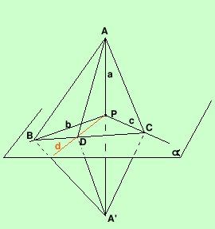

Criterio di perpendicolarita' fra una retta e un piano
Una retta e' perpendicolare ad un piano se e' perpendicolare a due rette
diverse del piano passanti per il punto di incontro fra la retta ed il piano
Il criterio dice bastera' mostrare che la retta e' perpendicolare a due rette
diverse del piano per essere perpendicolare a tutte le rette del piano passanti
per il punto d'incontro
Per dimostrarlo mostriamo che se la retta e' perpendicolare a due rette diverse
passanti per il punto d'incontro allora e'
perpendicolare anche ad una terza retta passante per il punto (e quindi a tutte
le rette passanti per il punto d'incontro)
Ipotesi
a  b
a c b
a c
b  c c
|
Tesi
d passante per P
tale
che
a d
|

sulla retta a che taglia il piano nel punto P si considerano due punti
equidistanti da P da bande opposte rispetto al piano a : A ed A'; si
considerino il punto B sulla retta b ed il punto C sulla retta c, si congiungano
B e C con A ed A'. Considero il triangolo BAA': esso è isoscele perchè la sua
altezza BP è anche mediana essendo PA=PA' per costruzione pertanto AB = A'B;
considerando il triangolo CAA' con la stessa dimostrazione ottengo CA = CA'.
Congiungo C con B e considero ora i triangoli CAB e CA'B essi hanno:
CB in comune
AB = A'B perchè dimostrato
AC = A'C perchè dimostrato
quindi i due triangolo sono congruenti per il terzo criterio di congruenza ed in
particolare avrò che l'angolo ABC è uguale all'angolo A'BC .
Considero ora una retta d passante per P, basterà dimostrare che tale retta è
perpendicolare ad a; la retta d incontrerà il segmento BC (od un suo
prolungamento) nel punto D; congiungo D con A ed A' e considero i triangoli ABD
ed A'BD essi hanno:
AB = A'B perchè già visto prima
BD in comune
l'angolo ABC uguale all'angolo A'BC perchè già dimostrato
quindi i due triangoli sono congruenti per il primo criterio di congruenza, in
particolare avremo AD = A'D. Considero ora il triangolo ADA' , esso è isoscele
prechè ha due lati AD ed A'D uguali ed essendo DP mediana per la proprietà dei
triangoli isosceli sarà anche altezza cioè DP è perpendicolare alla retta a come
volevamo dimostrare.
|